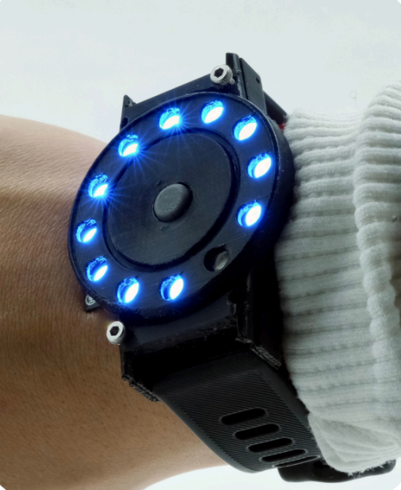
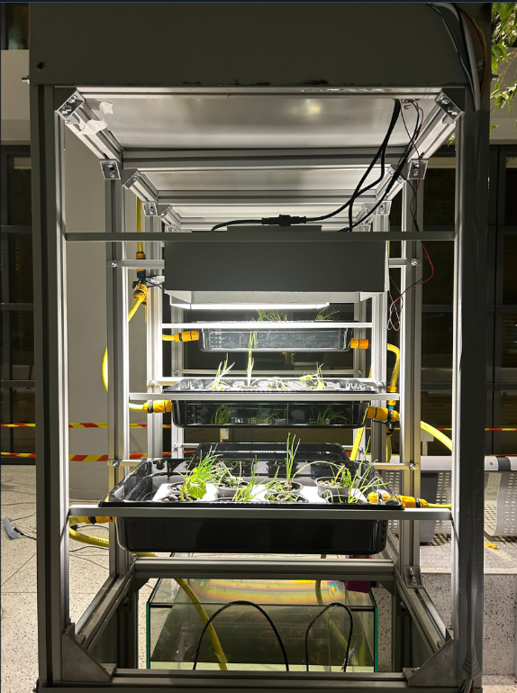
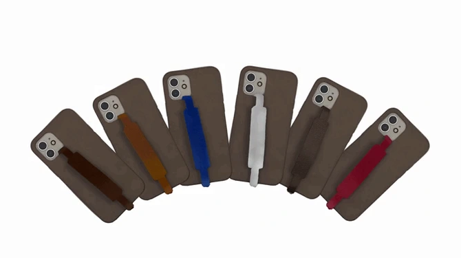

STANDART
STANDART is a custom apparel brand dedicated to student associations and university clubs. I founded it in 2020 and it's still ongoing.
A collection of work I've done.
STANDART is a custom apparel brand dedicated to student associations and university clubs. I founded it in 2020 and it's still ongoing.

OKSI is a minimalist running watch designed to help runners disconnect from data overload. Reflexion on UX design and hardware development.

Combines fish cultivation and hydroponic plant growth in a closed, self-sustaining loop. Prototyped to enable scaling the system in confined spaces.

A phone accessory made from upcycled leather designed to enhance your phone’s grip.Successfully funded on Kickstarter.